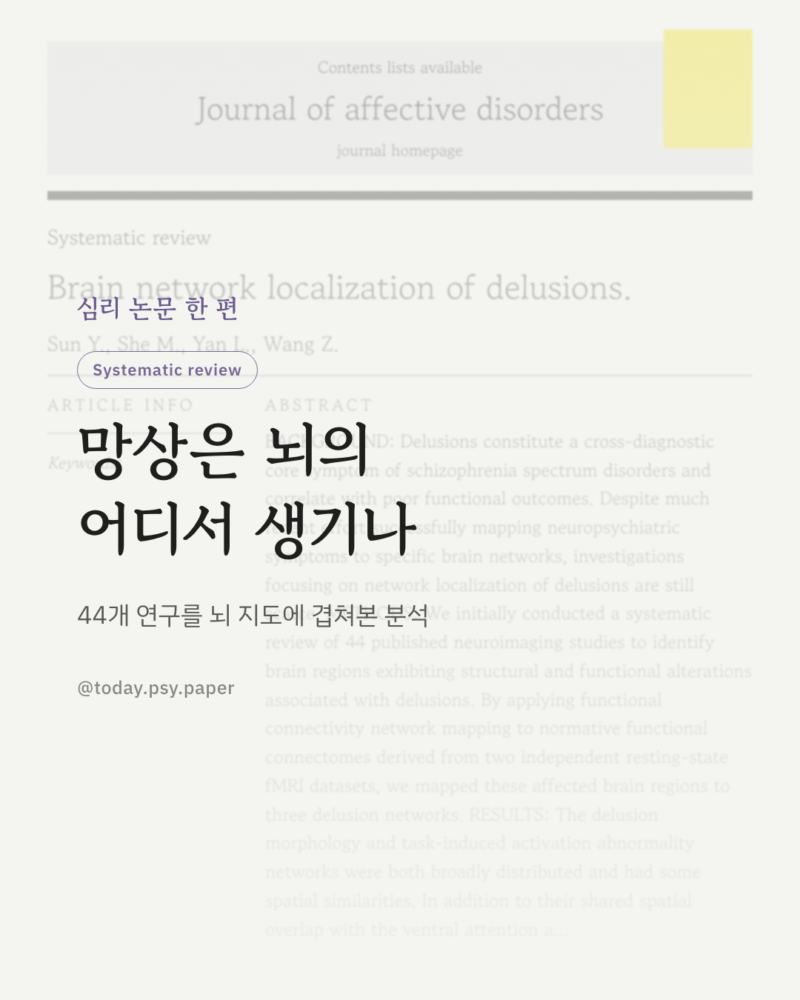

조현병 스펙트럼 장애를 관통하는 핵심 증상, 망상. 환청과 달리 망상이 뇌의 어느 네트워크와 연결되는지는 그동안 잘 밝혀지지 않았습니다. 연구팀은 먼저 신경영상 연구 44편을 체계적으로 검토해, 망상과 관련된 뇌 구조·기능 이상을 보고한 부위들을 모았습니다. 이후 이 부위들을 정상인의 안정 상태 뇌 연결망 데이터(두 개의 독립된 데이터셋)에 겹쳐, 망상과 연관된 세 가지 네트워크를 그려냈습니다. 구조 이상 네트워크와 과제 수행 중 활성 이상 네트워크는 배쪽 주의 네트워크·체성 감각운동 네트워크에서 겹치면서도, 각각 전두두정엽·등쪽주의망, 피질하·변연계 영역과 더 밀접했습니다. 반면 가만히 쉬고 있을 때의 활동 이상은 기본 상태 네트워크와 가장 많이 겹쳤습니다. 이를 바탕으로 우측 하전두회 판개부 등 세 부위가 향후 뇌자극 치료의 표적 후보로 제시됐습니다. 다만 이 연구는 기존 논문 속 좌표를 정상인의 뇌 지도에 겹쳐 본 간접적 분석으로, 실제 조현병 환자의 뇌를 직접 촬영해 검증한 결과는 아닙니다. 출처: Journal of Affective Disorders (2026), 'Brain network localization of delusions' #임상심리 #정신건강정보 #조현병 #망상 #뇌과학 #신경정신의학 #논문리뷰 #심리학연구
python3 publish.py 42785384